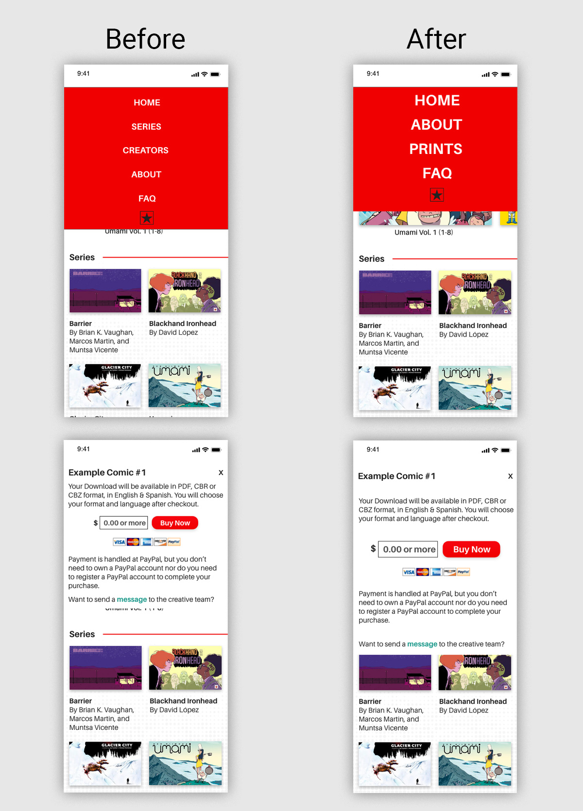
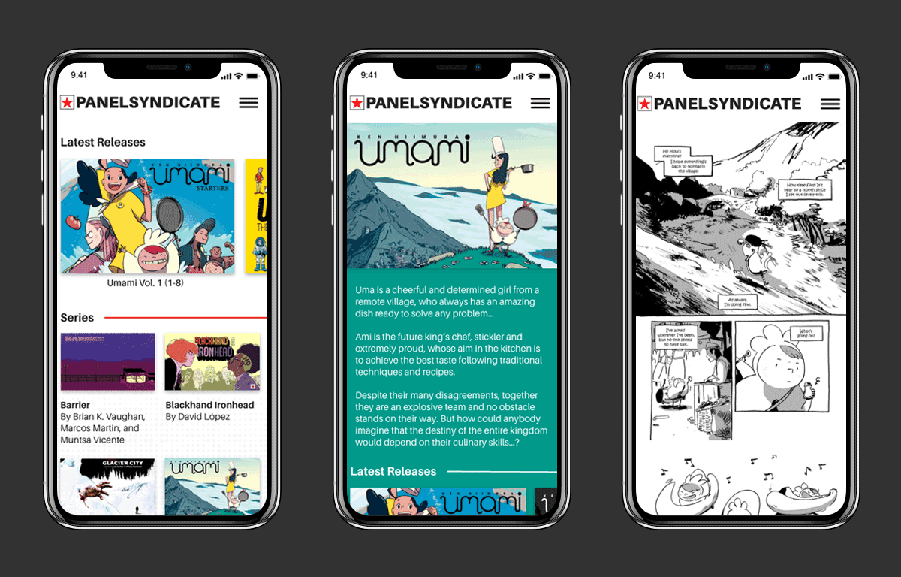

Project Name: Sequential
Roles: Researcher
UX Designer
UI Designer
Year: 2019
Digital Comics Direct from Creators to Readers
Panel Syndicate is a website that allows comic creators to directly sell digital comics to readers for whatever price the reader thinks is fair.
Problem
The problem I suspect is that users are not enticed by the dated look of the site and currently the site is not optimized for mobile.
Research
In the research phase of this project, I conducted user interviews remotely over the phone in order to get a better understanding of the problem. I was most interested in getting qualitative feedback about the site to gauge how to go about the redesign of the site. After the interviews I learned that the site’s appearance played a great deal in the perception of the users.
Competitive Analysis
I conducted a competitive analysis comparing other comic sites and indirect competitors such as Netflix that are also providing consumable content to users. My findings found that most other sites were more up to date visually and that one of Panel Syndicate’s strength was its focus on the creators who contribute their comics to the site, which led to the inclusion of a new creators section on the home page.

User Flow
To get a better understanding of how the site works mapping out user flows was informative. I looked for inconsistencies or ways to streamline the site and focus on what users are there to achieve.
Sketches
I came up with 4 different versions to try various placements and input methods. Went with version 3 since it best struck the balance of being accessible to returning customers to get the latest releases but also was friendly to new users interested in the series that are offered by Panel Syndicate.

Wireframes
This is where I started to consider spacing and how the other elements interacted with each other. At this stage I learned how important the shapes of your images can impact the layout of the site. Initially my sketches and wireframes were more square but all of the images from the existing site are in a more rectangular wide format so I needed to adjust accordingly. This also dictated how the site would scale from mobile to desktop. The initial square pattern did not fit as well within the grid system. I used low fidelity wireframes created in Adobe XD and created the clickable prototype in Adobe XD as well. There were three iterations of wireframes.

User Testing
I did more user testing to learn about user’s behavior and improve features. I tested three people who currently read comics digitally. I Used remote testing through Adobe XD and interviewed them over the phone as they used the Panel Syndicate prototypes. Their task was to navigate to the two different series pages and a creator page My findings from the tests were that the new aesthetic was liked by all three users. Some feedback I received was that the mailing list, purchase modal, and navigation modal felt too cluttered compared to the rest of the site. After reassessing some were qualitative concerns and others were usability related ones such as one user’s thumb being too big to press the text easily in the navigation modal overlay. After that I increased the size of the text in that modal.

UI Design
The current Panel Syndicate site has a primarily white and red design so I wanted to adhere somewhat to the aesthetic of what’s been built. The iOS style guidelines helped inform some of the spacing that helped with the edits to the overlay modal.
Learnings
I learned how critical considering the size of the images available are along with always considering how the site might scale. Also to be flexible with wireframes to better serve the overall user experience.